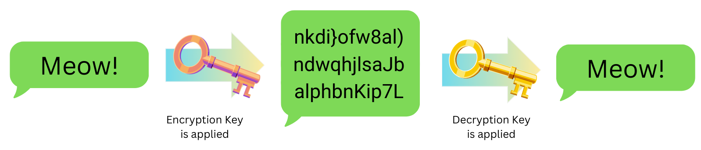

🗓️ March 7, 2026
👩💻 Izebel, RowanTree Security
⏱︎ 3 min read
End-to-end encryption means that the contents of your message are scrambled, and no one else can decipher the code - not even the company that created the software or runs their servers - as long as they don't have the key that's used to unscramble the code.

This image shows how end-to-end encryption works. When an encryption key (a fancy math equation) is applied, the message ("Meow!") is scrambled into unreadable gibberish before it travels. Only the intended recipient, who applies the matching decryption key, can unscramble it back into the original message. Anyone who intercepts the message in the middle sees nothing but nonsense. In E2EE communication methods, neither the software company nor anyone monitoring the network or other internet infrastructure can read the contents of your message because they never hold the decryption key.
End-to-end encyrption is an essential tool if you value privacy. Let's say you want to access healthcare or see a therapist. If your provider is storing their notes on a platform that is not E2EE, someone who works at the software company that makes the platform can see your personal information and history. Legal action could also be directed at the software company, and they may hand over your personal records without ever telling you, or fighting to keep your data safe. But if the platform uses end-to-end encryption, the notes just look like random letters and numbers. A court would have to get the encryption key from your provider - who might be more inclined to protect your information than a company.
There are different types of encryption out there - so keep in mind that if you see something described as "encrypted" - just one word all by itself - that really doesn't mean much if you want to stay safe from a government. What matters is who has access to those encryption keys and is able to decrypt the message. If that's just you and the message recipient, that's good. Usually we'll see the terms "end-to-end" or "zero-knowledge" or sometimes "client-side" describing the type of encryption used in these cases. If you see "encrypted in transit" or "encrypted at rest" - those are important methods that help keep your data safe from hackers, but they're not the same thing. In those cases, the software company holds the encryption keys, and can decipher your data, and potentially expose it to additional risk.
Remember: E2EE doesn't protect your data once it has been decrypted - for example, if someone is monitoring device activity, or if someone takes a screenshot of the decrypted message and doesn't store it safely.